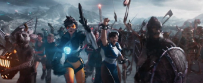

Steven Spielberg’s must-see sci-fi film of the 2010 decade, Ready Player One was a treasure trove of references in this film.
The story takes place in 2045, in a world quite chaotic with war, famine and poverty. However two people from a company called Gregarious Games create a virtual world, the OASIS. It was initially based as a MMORPG (Massive Multiplayer Online Role Playing Game). The creator of the game passed away, but a video is released explaining that an Easter Egg was hidden in the game. The winner will have, its legacy amounting to $500 billion. However it is hidden in the Oasis but to find it, it is very complicated to find. That’s when Wade Watts, a young orphan who lives with his aunt Alice. But in the Oasis he has the pseudonym of Parzival.
Of course, if the people in the OASIS have to find the famous easter egg, well in the film there are some like the Iron Giant, he also has the DeLorean, the mythical vehicle from Back to the Future. If you know all the references in the film. But there are also references to movies like Harry Potter and the Deathly Hallows, Deadpool, Batman or Wonder Woman. And for video games references, we have Overwatch where we see the character of Tracer, but also the commander Shepeard from Mass Effect. There are too many of them! This film is a nugget for fans of video games or films.
If you think Ready Player One is oriented to video game with references. Then the book will also interest you